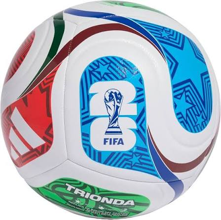

A bola
A bola oficial do torneio se chama Adidas Trionda. Para as semifinais, a disputa de terceiro lugar e a final, a FIFA lançou uma versão especial: a Trionda Final, com as cores dourado, preto e vermelho e os nomes das cidades-sede impressos nela.
Recordes desta edição
- Primeira Copa com 48 seleções
- Primeira Copa com três países-sede
- Primeira Copa com show no intervalo da final
- Maior número de jogos da história: 104 partidas
- Torneio mais longo: 39 dias
Surpresas do torneio
- A Noruega eliminou o Brasil e terminou em 5º — sua melhor campanha em quatro Copas.
- O Marrocos foi novamente a melhor seleção africana, eliminado pela França nas quartas.
- O México, país-sede, venceu um mata-mata pela primeira vez desde 1986.
- A Suíça voltou a vencer um jogo eliminatório depois de 88 anos.
Com 48 seleções, a Copa de 2026 deu chance a países que nunca haviam disputado o torneio — e alguns deles surpreenderam os favoritos.
Fonte: site oficial da FIFA .